Nourriture et restaurants
Plats typiques serbes
Partie salée
-
Ćevapi (ou ćevapčići) - Petites saucisses moelleuses de viande grillées (mélange boeuf
et porc), à essayer au moins une fois !

-
Pljeskavica - Un steak fait du même mélange de viande que les ćevapi.
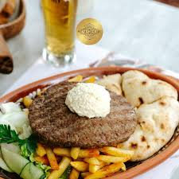
-
Mešano meso - Un assortiment de viandes grillées au barbecue (roštilj), très populaire
en Serbie.
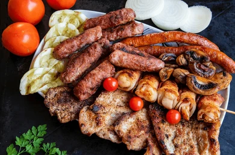
-
Karađorđeva šnicla - Escalope panée roulée, farcie avec du kajmak.
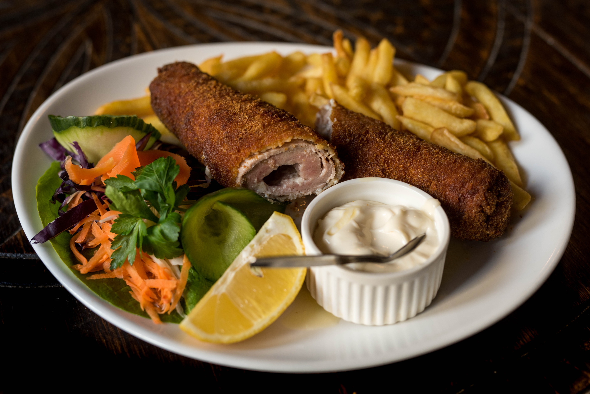
-
Kajmak - Préparation à base de lait au goût riche et crémeux.
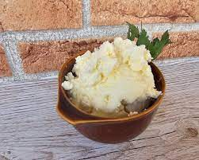
-
Komplet lepinja - Pain plat traditionnel (lepinja), coupé en deux, enduit de kajmak et
garni d'un œuf. Le tout est brièvement passé au four, puis arrosé d'un mélange de jus de viande chaud
(pretop). Servi dans certains restaurants ou certaines boulangeries (pekara).

-
Burek ou Pita - Deux préparations feuilletées farcies, souvent avec de la viande, ou du
fromage serbe ou des épinards. Plus fréquemment achetées en boulangerie (pekara).
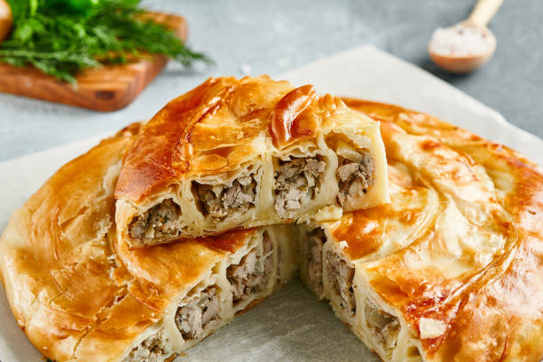
-
Fromage serbe (sir) - Le fromage serbe, proche de la feta mais moins fort en goût.

-
Ajvar - Une purée de poivrons rouges et d'aubergines, parfois servi en tartinade.
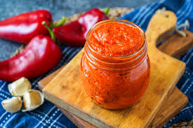
-
Sarma - Chou farci à la viande et au riz, plus fréquemment consommé en hiver et à la
maison. Vous n'en trouverez pas facilement au restaurant, mais impossible de lister des plats serbes
sans le mentionner!
PS: En plus c'est le plat préféré de Nataša !
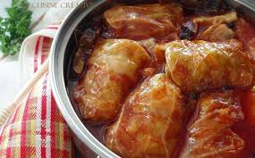
Partie sucrée
-
Baklava - Pâtisserie feuilletée fourrée aux noix et arrosée de sirop sucré. essayer au
moins une fois !
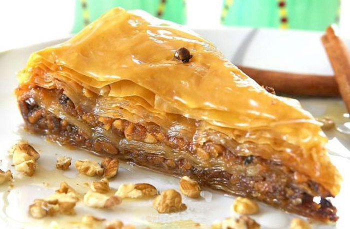
-
Plazma torta - Gâteau à base de biscuits Plazma (gâteau à l'image des petits beurre en
France), préparé avec du beurre, du sucre, et de la crème.
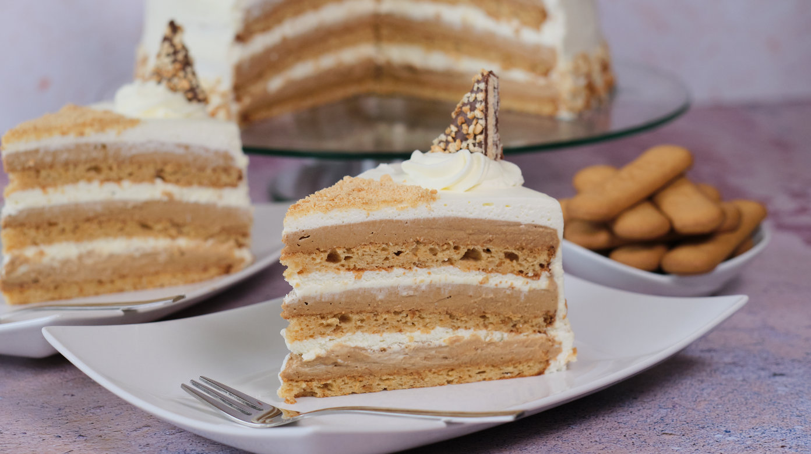
-
Ledena kocka - Gâteau servi froid, composé de génoise, de crème pâtissière et de
chocolat.
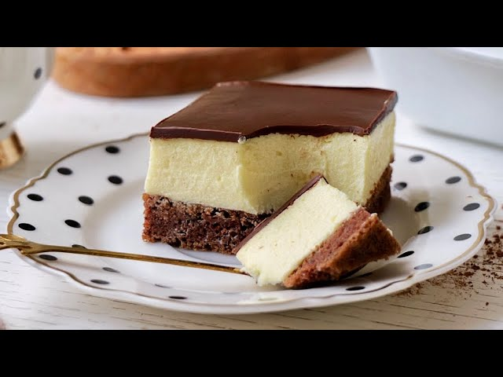
-
Princes krofna - Beignets fourrés à la crème pâtissière et recouverts de sucre glace.
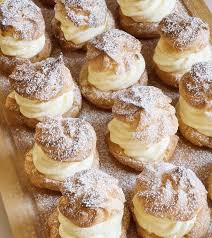
-
Slatka pita - C'est la version sucrée de la pita! Elle peut être aux pommes, aux
cerises ou à la citrouille.
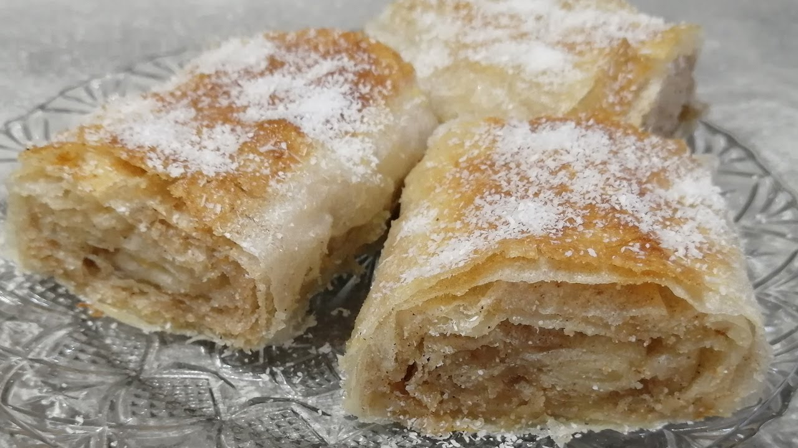
Dans les restaurants en Serbie, il est courant que certains accompagnements (prilog), comme le pain, les
légumes, les frites ou la salade, ne soient pas inclus dans le plat principal. Pensez à demander s'ils
sont inclus lorsque vous commandez.
Il est très fréquent de prendre une salade à côté de son plat (par exemple
tomates/concombres/fromage serbe).
Les portions sont très généreuses, donc n'hésitez pas à partager
ou demander une demie portion (pola porcije, prononcé pola portsiyé) !
Si vous souhaitez boire
un café ou un verre, vous remarquerez que le centre ville regorge de cafés mignons. 😁
Restaurants à Bajina Bašta
| Nom du restaurant | Infos | Tarif |
|---|---|---|
| Bašta u Bašti |
Ce café du centre ville propose aussi de la nourriture, leurs petits déjeuners sont excellents
(attention: les petits-déjeuners en Serbie sont salés). Si vous y passez juste pour boire un verre, essayez leurs jus de fruits maison ou leurs cocktails. |
Carte bleue non acceptée. Souvent rempli le samedi soir. |
| Gurman | Le fast food préféré d'Antony ! Commandez une part de pizza (énorme) ou un burger avec du pain traditionnel serbe (lepinja). | Carte bleue non acceptée. Comptez moins de 2€ pour un burger (150g de viande) ou une part de pizza. |
| Studenac | Restaurant offrant un point de vue sur la maison sur la Drina. Ce restaurant vous proposera de bons plats. Ils accueillent de nombreux touristes donc ils se débrouillent en anglais. | Carte bleue non acceptée, comptez ~15€ pour un plat complet avec une boisson (tarif serbe classique). |
| Dve Lipe | En face de Studenac, ce restaurant est lui aussi très bon. | Nous y avons mangé que lors d'un mariage, la nourriture était excellente. |
| Turist | Le restaurant de l'hôtel Turist. La nourriture servie y est de qualité. | Tarif serbe classique. |
| Vrelo | Sur le chemin entre la ville et le lac de Perućac, le restaurant offre une terrasse au dessus d'une cascade et de la rivière Drina. | Carte bleue acceptée, ce restaurant est un peu plus cher que les autres restaurants serbes (très correct par rapport à la France). |
| Kod Platani | Situé à Valjevo sur le trajet entre Belgrade et Bajina Bašta (Kafana kod laze sur Google Maps), ce restaurant propose d'excellents ćevapčići. | Á la sortie de Valjevo en venant depuis Belgrade, le restaurant se trouve sur la gauche. Le parking est souvent rempli. |